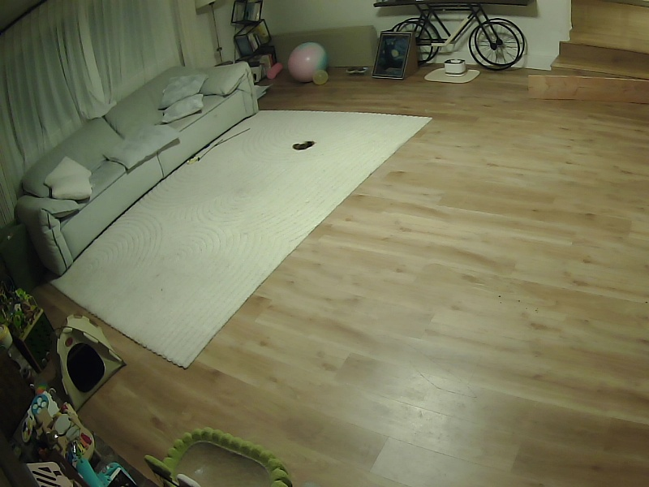

Qbo · 100% agreement
What the camera believed
26 min
tracked as “Qbo”
0.7 px
total movement
It was an exercise ball.
Real frame 2026-11-01 07:35 · box [351,47,407,104] from trace review 2026-11-01
Agentic CV · Meta Muse Spark